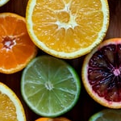
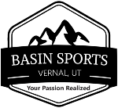

Weather Alert Here - closeable
Upcoming Events
July 30: John Wesley Powell River Festival
Join us for the third annual festival! Live Music, Kayak Pond, Beer Garden, Cornhole Tournament and more! Enter to win a free trip down the Green River!
July 31: Hummingbird Banding at Red Canyon Lodge
Here's a great opportunity to get the family out and enjoy some of the most beautiful birds in the West.August 21: Cornhole On Ice
Gather up your best bag tossing buddy and meet us at the Uintah Hockey rink for some fun and laughs! Awards presented to the top team!
Featured Local Companies
Choice Health Clinic
Basin Sports
Trout Creek Flies


Our Purpose
We exist to unite businesses in the Vernal area and strive to make our community conducive to growth. We maintain high standards to ensure that the businesses we interact with are an asset to the community we service.